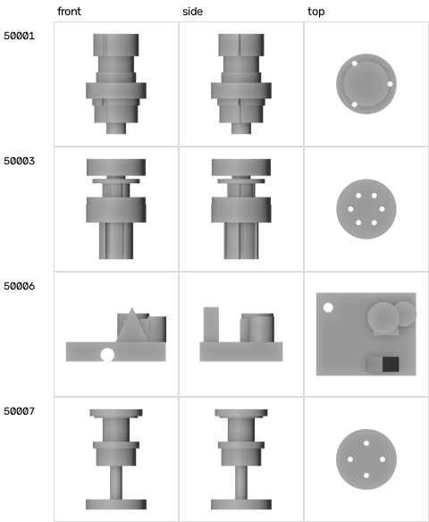

p6-multiview-3d · 2026-10 · 实测
三视图到三维：实测台
“AI 出三视图，再自动建模”能做到多准？我们做了 16 个有真值的物体，把 ComfyUI + Qwen-Image、视频转台重建、LLM + Blender、原生多视图 3D 模型放在同一把尺子上量了一遍。
投影
第三角（ANSI）
尺度
最长边 1.6 · 视窗 [−1,1]²
基准
16 个物体
硬件
RTX 5090 Laptop · ≈12 GB
拖动任一视窗旋转，所有视窗同步。网格已简化到约 4000 面，路线 A/B 的结果已用相似变换对齐到真值坐标系（与评测一致）。CD 为 Chamfer 距离（越小越好，物体最长边 = 1.6），F 为 F-score@0.02。
盲测零件由随机程序生成，参数没有给写脚本的人看过，避免“知道答案”的污染。下面两张图共用一条 0–1 的刻度。
命名形体 10 个（含家具、建筑、角色、有机体）
逐物体 Chamfer 距离
Qwen-Image-2.1 画的三视图准不准
图 4 · 生成 vs 真值
纯文字生成的三视图（无真值，只能看自洽性）
LLM + Blender 闭环是怎么收敛的
图 5 · 盲测零件 blind_05
每一轮：模型写 bpy 脚本 → 无头 Blender 建模 → 渲染三视图 → 和目标比轮廓（深灰 = 一致，红 = 缺材料，蓝 = 多材料）→ 把差异图和数字发回去。本页数字里的“Claude 代理”是 Claude Code 代理通过文件交换手动扮演 LLM 得到的，不是 API 自动调用（本机没有 API key）。

train/make_dataset.py 生成的配对样本：输入是三视图，标签就是生成它的建模代码。本机 20 条用时 108 秒。